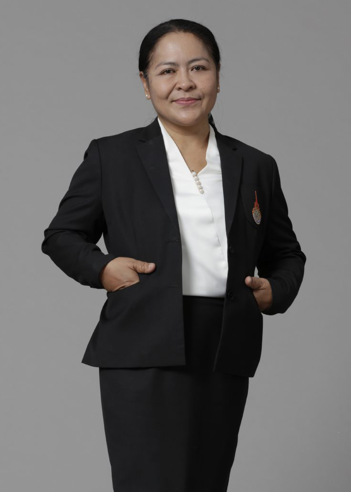

คณาจารย์ ดร.ปิยะ ถิรพันธุ์เมธี Piya Thirapanmethee, Ph.D.อาจารย์ คุณวุฒิ ปร.ด.(เทคโนโลยีสารสนเทศและการสื่อสารเพื่อการศึกษา) มหาวิทยาลัยเทคโนโลยีพระจอมเกล้าพระนครเหนือ Ph.D. (Information and Communication Technology for Education) King Mongkut's University of Technology North Bangkok วท.ม. (เทคโนโลยีสารสนเทศ) มหาวิทยาลัยเทคโนโลยีพระจอมเกล้าธนบุรี M.Sc. (Information Technology) King Mongkut's University of Technology Thonburi อส.บ. (เทคโนโลยีอิเล็กทรอนิกส์) สถาบันเทคโนโลยีพระจอมเกล้าเจ้าคุณทหาร ลาดกระบัง B.Ind.Tech. (Electronics) King Mongkut's Institute of Technology Ladkrabang ประสบการณ์สอน โครงสร้างข้อมูล (Data Structure) เครือข่ายคอมพิวเตอร์ (Computer Network) ระบบปฏิบัติการ (Operating System) วิศวกรรมซอฟต์แวร์ (Software Engineering) ความมั่นคงของระบบสารสนเทศ (Information System Security) การจัดระเบียบคอมพิวเตอร์และสถาปัตยกรรม(Computer Organization and Architecture) ดิจิทัลอิเล็กทรอนิกส์ (Digital Electronics) การประมวลสัญญาณดิจิตอล (Digital Signal Processing) การจัดการองค์กรและระบบสารสนเทศ (Management Information System in Organization) นายชาญวิทย์ มุสิกะ Mr. Chanwit Musikaอาจารย์ คุณวุฒิ วท.ม. (เทคโนโลยีอินเทอร์เน็ตและสารสนเทศ) มหาวิทยาลัยนเรศวร M.Sc. (Internet and Information Technology) Naresuan University วท.ม. (เทคโนโลยีอินเทอร์เน็ตและสารสนเทศ) มหาวิทยาลัยนเรศวร M.Sc. (Internet and Information Technology) Naresuan University ประสบการณ์สอน ไมโครคอนโทรลเลอร์ (Microcontroller) ระบบฝังตัว (Embedded System) การศึกษาเฉพาะเรื่องทางวิทยาการคอมพิวเตอร์ (Selected Topic in Computer Science) ระบบไมโครคอมพิวเตอร์และการต่อประสาน (Microcomputer System and Interfacing) เทคโนโลยีและการประยุกต์ใช้อินเทอร์เน็ต (Internet Technology and Applications) นางศรีสุดา สรนันต์ศรี Mrs. Srisuda Soranunsriอาจารย์ คุณวุฒิ ค.อ.ม. (คอมพิวเตอร์และเทคโนโลยีสารสนเทศ) มหาวิทยาลัยเทคโนโลยีพระจอมเกล้าธนบุรี M.S.Tech.Ed.(Computer and Information Technology) King Mongkut's University of Technology Thonburi วท.บ. (ศาสตร์คอมพิวเตอร์) มหาวิทยาลัยรามคำแหง B.Sc. (Computer Science) Ramkhamhaeng University ประสบการณ์สอน หลักการเขียนโปรแกรมคอมพิวเตอร์ (Principle of Computer Programming) ระบบฐานข้อมูล (Database System) ระบบจัดการฐานข้อมูล (Database Management System) ระเบียบวิธีการเขียนโปรแกรม (Programming Methodology) การวิเคราะห์และออกแบบระบบ (System Analysis and Design) วิทยาการคอมพิวเตอร์และเทคโนโลยีสารสนเทศเบื้องต้น (Introduction to Computer Science and Information Technology) ดร.ธวัชชัย สารวงษ์ Thawatchai Sarawong, Ph.D.อาจารย์ คุณวุฒิ ปร.ด. (เทคโนโลยีสารสนเทศ) มหาวิทยาลัยเทคโนโลยีพระจอมเกล้าพระนครเหนือ Ph.D. (Information Technology) King Mongkut's University of Technology North Bangkok ค.อ.ม. (เทคโนโลยีคอมพิวเตอร์) สถาบันเทคโนโลยีพระจอมเกล้าพระนครเหนือ M.S.Tech.Ed. (Computer Technology) King Mongkut’s Institute of Technology North Bangkok ค.อ.บ. (วิศวกรรมคอมพิวเตอร์) สถาบันเทคโนโลยีราชมงคล B.S.Tech.Ed. (Computer Engineering) Rajamangala Institute of Technology ประสบการณ์สอน การประมวลผลแฟ้มข้อมูล (File Processing) ระบบปฏิบัติการ (Operating System) หลักการเขียนโปรแกรมคอมพิวเตอร์ (Principle of Computer Programming) นางกุลชยา พงษ์แสวง Mrs. Kulchaya Pongsawaengอาจารย์ คุณวุฒิ กศ.ม. (ธุรกิจศึกษา) มหาวิทยาลัยศรีนครินทรวิโรฒ ประสานมิตร M.Ed. (Business Education) Srinakharinwirot University บธ.บ. (การจัดการทั่วไป) มหาวิทยาลัยสุโขทัยธรรมาธิราช B.B.A. (General Management) Sukhothai Thammathirat Open University ประสบการณ์สอน คอมพิวเตอร์พื้นฐาน (Fundamental of Computer) โปรแกรมสำเร็จรูป  ผู้ช่วยศาสตราจารย์นพรัตน์ ภัยวิมุติ Asst. Prof. Nopparat Paivimutผู้ช่วยอธิการบดี มหาวิทยาลัยเทคโนโลยีราชมงคลกรุงเทพ,ผู้จัดการคลินิกเทคโนโลยี มหาวิทยาลัยเทคโนโลยีราชมงคลกรุงเทพ คุณวุฒิ ศษ.ม. (เทคโนโลยีและสื่อสารการศึกษา) มหาวิทยาลัยสุโขทัยธรรมาธิราช M.Ed (Educational Technology and Communication) Sukhothai Thammathirat Open University บธ.บ. (คอมพิวเตอร์ธุรกิจ) มหาวิทยาลัยสยาม B.B.A (Business Computer) Siam University ประสบการณ์สอน การเขียนโปรแกรมคอมพิวเตอร์เบื้องต้น โปรแกรมสำเร็จรูป ระบบฐานข้อมูลเบื้องต้น คอมพิวเตอร์พื้นฐาน (Fundamental of Computer) คอมพิวเตอร์เบื้องต้นและภาษาเบสิก การโปรแกรมคอมพิวเตอร์เบื้องต้น(ภาษาเทอร์โบปาสคาล) การโปรแกรมคอมพิวเตอร์เบื้องต้น(ภาษาซี) การโปรแกรมคอมพิวเตอร์เบื้องต้น(ภาษาวิชวลเบสิก) นางสาวสุรีพร นวลนิ่ม Ms. Sureeporn Nualnimอาจารย์ คุณวุฒิ ค.อ.ม. (เทคโนโลยีคอมพิวเตอร์) สถาบันเทคโนโลยีพระจอมเกล้าพระนครเหนือ M.S.Tech.Ed. (Computer Technology) King Mongkut’s Institute of Technology North Bangkok ค.อ.บ. (วิศวกรรมคอมพิวเตอร์) สถาบันเทคโนโลยีราชมงคล B.S.Tech.Ed. (Computer Engineering) Rajamangala Institute of Technology ประสบการณ์สอน วิทยาการคอมพิวเตอร์และเทคโนโลยีสารสนเทศเบื้องต้น (Introduction to Computer Science and Information Technology) คอมพิวเตอร์กราฟิก (Computer Graphics) การปฏิสัมพันธ์ระหว่างมนุษย์กับคอมพิวเตอร์ (Human-Computer Interaction) เทคโนโลยีและการประยุกต์ใช้อินเทอร์เน็ต (Internet Technology and Applications) การออกแบบเว็บไซต์ (Website Design) อัลกอริทึมส์ (Algorithms) นางสาวชนาเนตร อรรถยุกติ Ms. Chananate Arthayuktiอาจารย์ คุณวุฒิ วท.ม. (วิทยาศาสตร์คอมพิวเตอร์) จุฬาลงกรณ์มหาวิทยาลัย M.Sc. (Computer Science) Chulalongkorn University บธ.บ. (ระบบสารสนเทศ) สถาบันเทคโนโลยีราชมงคล B.B.A. (Information System) Rajamangala Institute of Technology ประสบการณ์สอน การเขียนโปรแกรมเชิงวัตถุ (Object-Oriented Programming) การวิเคราะห์และออกแบบเชิงวัตถุ (Object-Oriented Analysis and Design) การเขียนโปรแกรมบนเว็บ (Web Programming) การโปรแกรมคอมพิวเตอร์ขั้นสูง (Advanced Programming) วิศวกรรมซอฟต์แวร์ (Software Engineering) นายสถิระ ชัยชนะกลาง Mr. Satira Chaichanaklangอาจารย์ คุณวุฒิ วท.ม. (การศึกษาวิทยาศาสตร์-คอมพิวเตอร์) สถาบันเทคโนโลยีพระจอมเกล้าเจ้าคุณทหาร ลาดกระบัง M.Sc. (Science Education (Computer)) King Mongkut's Institute of Technology Ladkrabang ค.อ.บ. (อิเล็กทรอนิกส์และคอมพิวเตอร์) สถาบันเทคโนโลยีพระจอมเกล้าเจ้าคุณทหาร ลาดกระบัง B.S.Tech.Ed. (Electronics and Computer) King Mongkut's Institute of Technology Ladkrabang ประสบการณ์สอน การจัดระเบียบคอมพิวเตอร์และสถาปัตยกรรม (Computer Organization and Architecture) ดิจิทัลอิเล็กทรอนิกส์ (Digital Electronics) ระบบมัลติมีเดียและการประยุกต์ใช้ (Multimedia System and Applications) ผู้ช่วยศาสตราจารย์.ดร.อรสา พัสดุ Asst. Prof. Orasa Patsadu, Ph.D.อาจารย์ คุณวุฒิ ปร.ด. วิทยาการคอมพิวเตอร์ (หลักสูตรภาษาอังกฤษ) มหาวิทยาลัยเทคโนโลยีพระจอมเกล้าธนบุรี Ph.D. Computer Science (English Program) King Mongkut's University of Technology Thonburi วท.ม. (วิศวกรรมซอฟต์แวร์) มหาวิทยาลัยเทคโนโลยีพระจอมเกล้าธนบุรี M.Sc. (Software Engineering) King Mongkut's University of Technology Thonburi บธ.บ. (ระบบสารสนเทศ) มหาวิทยาลัยเทคโนโลยีราชมงคลกรุงเทพ B.B.A. (Information System) Rajamangala University of Technology Krungthep ประสบการณ์สอน Data Science Data mining Data Science Software Engineering นางสาวมนรดา ศิริมงคล Ms. Monrada Sirimongkolอาจารย์ คุณวุฒิ วท.ม. (เทคโนโลยีสารสนเทศ) มหาวิทยาลัยเทคโนโลยีพระจอมเกล้าธนบุรี M.Sc. (Information Technology) King Mongkut's University of Technology Thonburi วท.บ. (วิทยาการคอมพิวเตอร์) มหาวิทยาลัยเทคโนโลยีราชมงคลกรุงเทพ B.Sc. (Computer Science) Rajamangala University of Technology Krungthep ประสบการณ์สอน การพัฒนารูปแบบสื่อออนไลน์ (Online Media Development) คอมพิวเตอร์พื้นฐาน (Fundamental of Computer) นางสาวนิลุบล บุตรไชย Ms. Nilubon Bootchaiอาจารย์ คุณวุฒิ M.S. (Computer Science), Syracuse University, U.S.A. B.S. (Computer Science), Syracuse University, U.S.A. ประสบการณ์สอน ผู้ช่วยนักวิเคราะห์ข้อมูลความปลอดภัย ความปลอดภัยทางโลกไซเบอร์ นางสาวสิริอร นุชผดุง Ms. Sirion Nutphadungอาจารย์ คุณวุฒิ วท.ม. (เทคโนโลยีสารสนเทศ) มหาวิทยาลัยเทคโนโลยีพระจอมเกล้าธนบุรี M.Sc. (Information Technology) King Mongkut's University of Technology Thonburi วท.บ. (วิทยาการคอมพิวเตอร์) มหาวิทยาลัยเทคโนโลยีราชมงคลกรุงเทพ B.Sc. (Computer Science) Rajamangala University of Technology Krungthep ประสบการณ์สอน อินเทอร์เน็ตในชีวิตประจำวัน (Internets for Everyday Life) เครือข่ายอินเทอร์เน็ต (Internetworking) เทคโนโลยีและการประยุกต์ใช้อินเทอร์เน็ต (Internet Technology and Applications) การออกแบบเว็บไซต์ (Website Design) คอมพิวเตอร์พื้นฐาน (Fundamental of Computer)